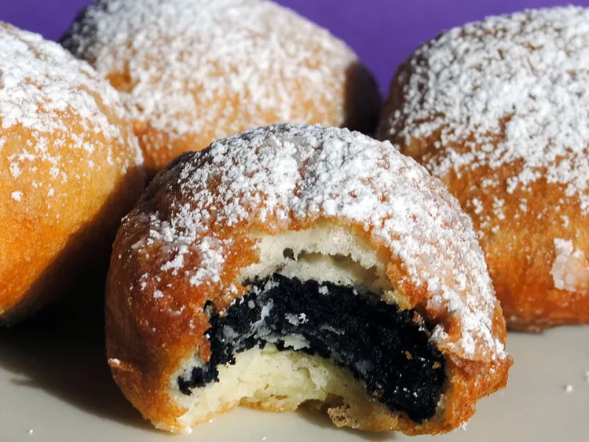

Deep Fried Oreos

Ingredients:
- Vegetable oil (for frying and for the batter)
- Milk
- An egg
- Pancake mix
-
A Package of oreos (regular and Double Stuf Oreos both work great)
Steps:
-
1
Heat oil in a deep fryer or large saucepan to 375 degrees F (190 degrees
C).
-
2
Whisk milk, egg, and 2 teaspoons of vegetable oil in a large bowl until
smooth. Stir in the pancake mix until no dry lumps remain.
-
3
Dip cookies into batter, one at a time, and carefully place into hot
oil. Fry in batches, 4 or 5 at a time, until cookies are golden brown,
about 2 minutes. Drain on a paper towel-lined plate before serving.